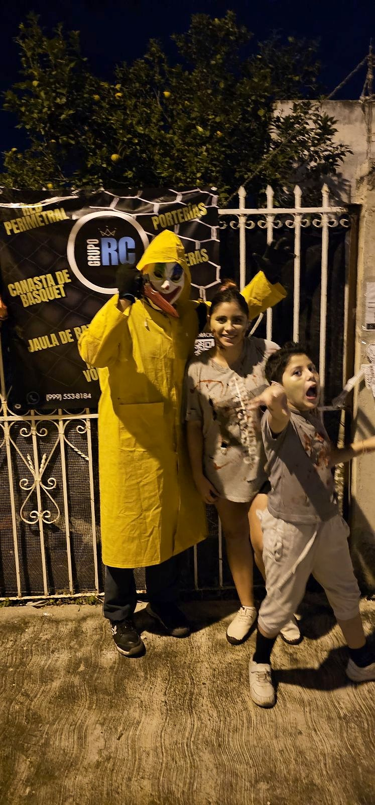
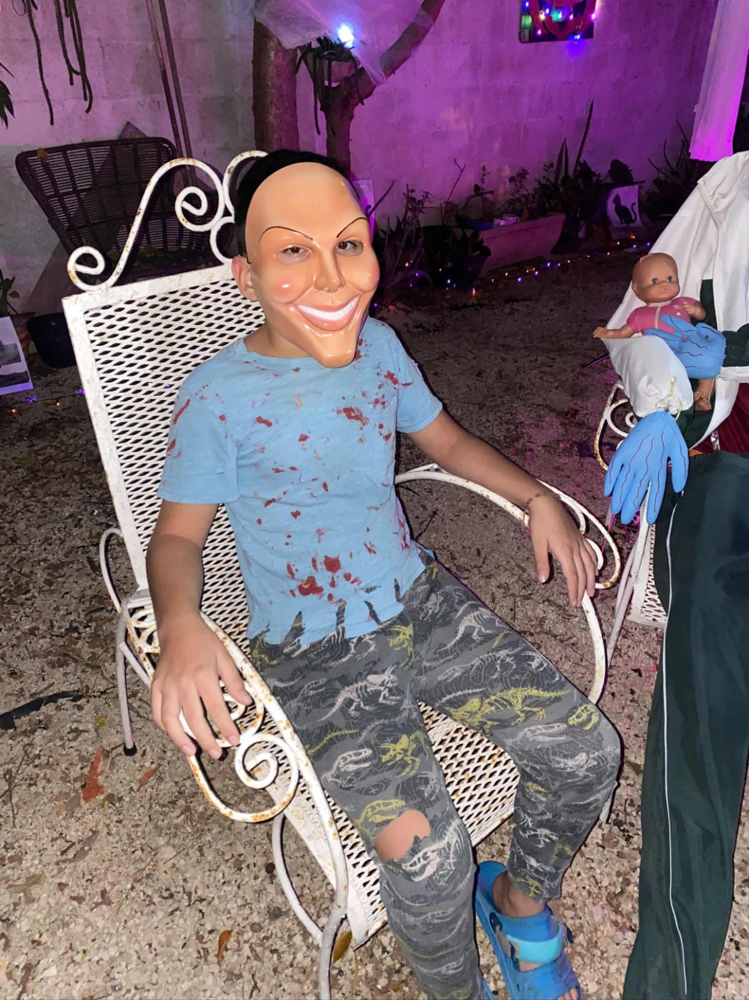

Por Reinier Coral · fundador de Grupo RC y organizador del evento
Por Reinier Coral · fundador de Grupo RC y organizador del evento
¿Qué es la Ruta de los Dulces?
Cada Halloween, en Ciudad Caucel, hogares y negocios decoran sus casas, la gente sale disfrazada y los vecinos regalan dulces a quienes hacen el recorrido. Es una de las noches más esperadas por las familias de la zona.
Nuestro paradero
En Grupo RC quisimos ser parte, pero a nuestra manera. Armamos la Parada de Dulces RC: nos disfrazamos, montamos un pasillo del terror y la regla era sencilla. Para llevarte los dulces había que cruzarlo, y nosotros estábamos adentro para asustarte.

2024: el primer pasillo
El 26 de octubre de 2024 abrimos por primera vez. Hubo sustos, gritos, risas y muchos niños que regresaron por segunda vuelta. El video de los sustos lo compartimos en el Facebook de Redes Deportivas RC.
2025: regresamos con más personajes
El 25 de octubre de 2025 volvimos con nuevos personajes, un payaso, dos brujas, Maléfica y un pequeño enmascarado, bajo la canasta de básquet y las redes de la entrada. También grabamos el recorrido de los que participamos en la parada y algunos sustos más.
Y en la silla, quieto como parte de la decoración, el pequeño enmascarado esperaba a los que se confiaban.
